Rompecabezas T (enunciado)
Este fin de semana lo estoy pasando en Pellegrini. Llegué anoche y fuimos a comer con mi familia. A la vuelta vino mi aigo Joel y mi mamá nos dió un rompecabezas hecho en madera bastante interesante. Consiste en 4 piezas de madera que hay que disponer de cierta forma para formar una letra T mayúscula.
Las piezas son las siguientes (como son de madera, podemos darlas vuelta y usarlas del lado que más nos convenga):
Amarillo
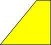 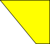 

Azúl

Verde
 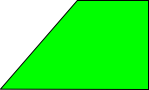 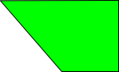 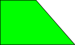
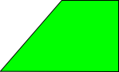 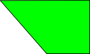 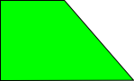
Rojo
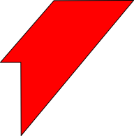  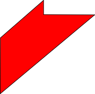
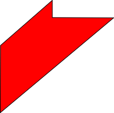 
Ya antes en el blog había planteado este tipo de juegos, se los dejo para pensar un poco. Mañana la solución.
UPDATE: solución al rompecabezas.
Comentarios
Comments powered by Disqus